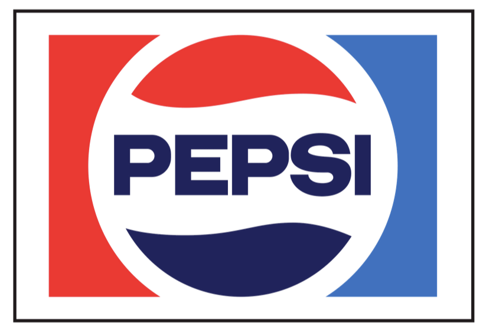
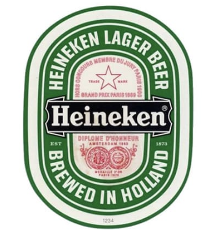
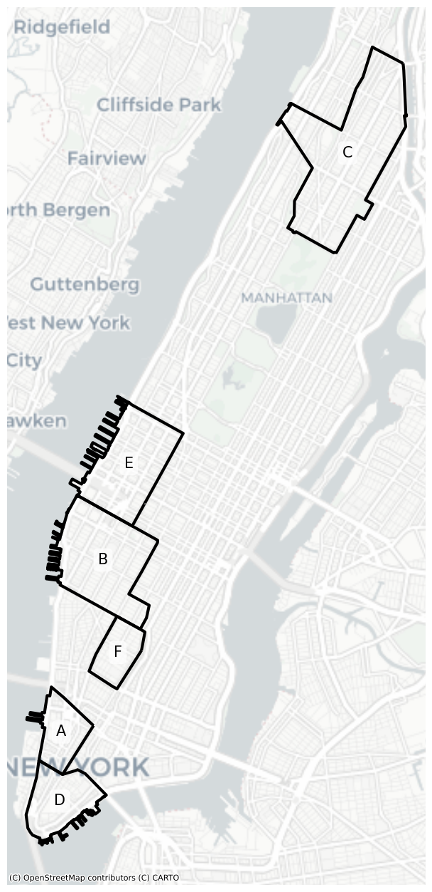
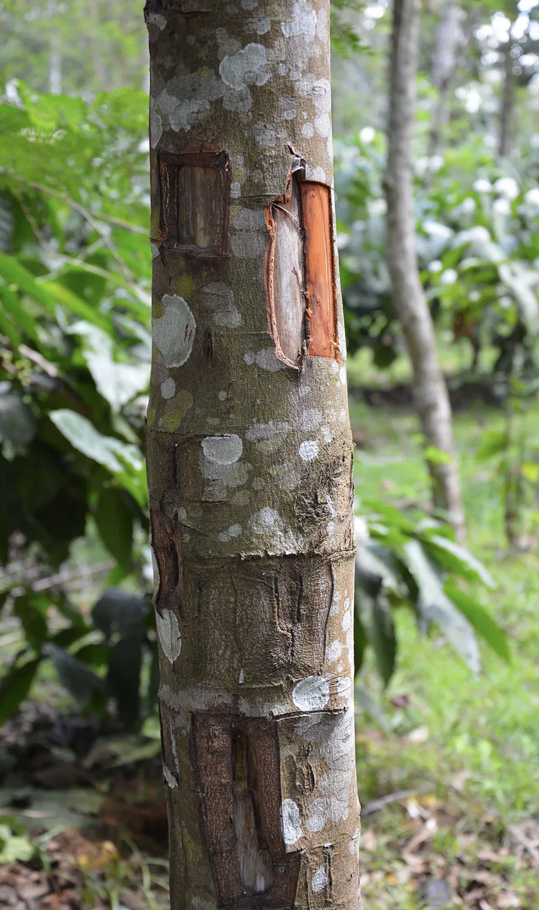
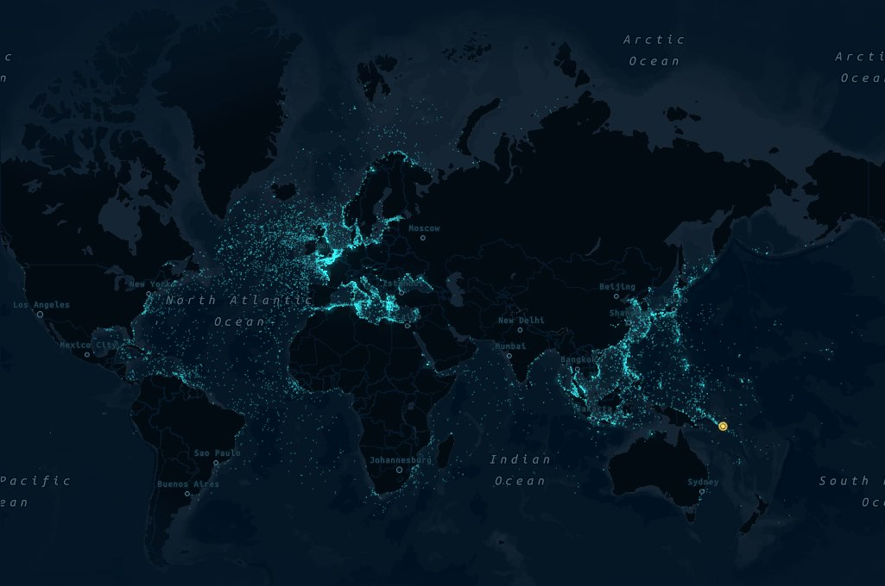

Trivia January 2025
20 Questions 146 Points
Part 1: 51 Points
Part 2: 81 Points
Final Round: 14 Points
Part 1
Popularity
1. Order the following Wikipedia pages from highest to lowest views in 2024 (1 Point Each).
A. Deadpool & Wolverine - 23.3 Million
B. World War II - 12.5 Million
C. Kamala Harris - 29.4 Million
D. Elon Musk - 18.7 Million
E. Chappell Roan - 10.7 Million
Sounds
2. Match the written sound a dog makes to the language (1 Point Each)
Arabic, French, Chinese, Italian
A. Hau, hau – Arabic
B. Waouh, waouh – French
C. Wang, wang – Chinese
D. Bau, bau – Italian
Government
3. Order the following U.S. Government Agencies from highest to lowest federal spending (1 Point Each).
A. Social Security Administration - 395 Billion
B. Department of Defense Military Programs - 250 Billion
C. Department of Health and Human Services - 452 Billion
D. Department of Veteran Affairs - 105 Billion
E. Department of Transportation - 30 Billion
Pride
4. Identify each component of the Progress Pride Flag shown below (2 Points Each)

4A.
Represents marginalized communities and people living with or who have died from HIV/AIDS

4B.
Represents spirit
4C.
Represents trans pride, with light blue and pink representing traditional baby colors for girls and boys, and white representing transitioning, intersex, or gender-neutral identities
4D.
Represents sunlight and stimulating new ideas
Nature
5. Match the following national parks to the image shown (1 Point Each)
Acadia, Badlands, Great Smoky Mountains, Yellowstone, Yosemite
5A.
Yellowstone

5B.
Yosemite

5C.
Acadia

5D.
Great Smoky Mountains

5E.
Badlands

Food
6. Identify the style of hot dog from the illustration and description (2 Points Each)
Companies
7. For each of the following brand logos, name the decade in which the logo was in use (2 Points Each).
7A.
1971-1987… 70s/80s
7B.
1999-2008… 2000s
7C.
1961-1971… 60s
7D.
1974-1991… 70s/80s
Driving
8. Order the following states by percentage of drivers with a DUI on their driving record from highest to lowest (1 Point Each)
A. Oregon – 0.99%
B. Wyoming – 2.73%
C. Texas – 0.39%
D. Michigan – 0.67%
E. Wisconsin – 1.53%
Politics
9. Order the following female first names by net Republican party share. For each of the names, its the percentage of people with that first name registered as Republicans minus the percentage registered as Democrats. Higher number means more Republican. Order from high to low (1 Point Each).
A. Karen – -1
B. Darla – 27
C. Annie – -55
D. Kelsey – -11
E. Vicki – 15
Darla, Vicki, Karen, Kelsey, Annie
10. Order the following male first names by net Republican party share. For each of the names, its the percentage of people with that first name registered as Republicans minus the percentage registered as Democrats. Higher number means more Republican. Order from high to low (1 Point Each).
A. Andre – -63
B. Anthony – -6
C. Michael – 13
D. Timothy – 22
E. Hunter – 47
Hunter, Timothy, Michael, Anthony, Andre
Part 2
Neighborhoods
11. Match each of the following Manhattan neighborhoods to the image of their approximate boundaries (1 Point Each).
Hell’s Kitchen, Harlem, Chelsea, Greenwich Village, Tribeca, Financial District
A. Tribeca
B. Chelsea
C. Harlem
D. Financial District
E. Hell’s Kitchen
F. Greenwich Village
Money
12. Identify the nation from the image of the currency (2 Points Each)
12A.
Australia
12B.
Canada
12C.
Mexico
12D.
South Korea
Agriculture
13. Identify the common cooking ingredient from the photo of it growing (spice, seasoning, herb, vegetable) (3 Points Each)
13A.
Cinnamon
13B.
Pepper
13C.
Vanilla

13D.
Garlic

Six Degrees of Separation
14. Connect the actors by films they share a collaborator with
Example, connect Jack Nicholson to The Rock. This is a possible answer, that is 2 degrees of separation as each movie is a degree:
Jack Nicholson (The Departed) Mark Wahlberg
Mark Wahlberg (The Other Guys) The Rock
Connect Zendaya to Kate Winslet in as few degrees as possible
Scoring: 6 Degrees: 1 Point, +2 Points for each fewer degree
Hypocoristics
15. For each of the following pet names or short names, identify the formal English given name associated with it, i.e. Dick -> Richard (2 Points Each)
A. Barry – Bartholomew
B. Sally – Sarah
C. Tina – Christina/Valentina
D. Toby – Tobias
E. Simon – Sylvester
F. Molly – Mary
Guess The Data
16. Identify the data being shown on the map (5 Points)
WWII Shipwrecks (Shipwrecks is worth 4 Points)
Movies
17. Identify the movies and missing actor based on the actors common appearances (1 Point Each)
Bird’s Eye View
18. Identify the famous international location from the satellite image (5 Points).
Venice Grand Canal, Venice Italy
Visual Pun
19. The following four image collage is a visual pun. Guess what each image represents for 3 Points, and then what the category is that connects them for an additional 3 Points. (15 Points Total)
Fast Food Restaurants
Chick-fil-A, Jack in the Box, Five Guys, Popeyes
Final Round
Genres
20. Match the niche contemporary music genre to its description (1 Point Each). Additionally, match the song played to the genre its from (1 Point Each).
Hyperpop, Zoomer Gaze, Hexd, Neoperreo, Future Funk, Witch House, Phonk
- (0:15-0:40) Money Machine - 100 gecs 2. Murder in My Mind - Kordhell (0:00-0:35) 3. Fly With Me - Sakura-Lee (1:05-1:20) 4. kenopsia - lil dirtbag (1:20-1:50) 5. Tu Sicaria - Ms Nina (0:10-0:40) 6. Excorcism - Sidewalks and Skeletons (0:00-0:30) 7. Where’s My Juul - Lik Mariko (1:10-1:30)
A. Hexd: Dark, experimental electronic music characterized by heavily distorted bass, industrial elements, and pitched-up vocals. Incorporates horror-like sounds and unsettling samples with aggressive, glitchy beats.
Where’s My Juul - Lik Mariko
B. Hyperpop: An exaggerated, maximalist take on pop music featuring distorted bass, Auto-Tuned vocals, and glitchy electronic production.
Money Machine - 100 gecs
C. Zoomer Gaze: Blends dreamy, reverb-heavy guitars with trap beats and bedroom pop production. Mixes nostalgic 90s alternative sounds with contemporary music sensibilities.
kenopsia - lil dirtbag
D. Future Funk: Dast-paced electronic genre that samples and remixes Japanese city pop and disco, adding heavy compression and modern dance beats.
Fly With Me - Sakura-Lee
E. Neoperreo: Electronic music genre that combines reggaeton rhythms with experimental low-fi production and aggressive, often sexually explicit lyrics
Tu Sicaria - Ms Nina
F. Witch House: Dark electronic music using occult symbols, chopped and screwed vocals, and trap-influenced beats.
Excorcism - Sidewalks and Skeletons
G. Phonk: Southern rap mixed with Memphis-style production, heavy bass, and cowbell beats.
Murder in My Mind - Kordhell
Soundtracks
21. The following popular songs have been heavily featured in movies. For each of the songs name the title and the artist (2 Points Each). Then, name as many films as you can that feature the song (1 Point Each).
A. “Fortunate Son” - Creedence Clearwater Revival
Forrest Gump, The Manchurian Candidate, Live Free or Die Hard, Battleship, War Dogs
B. “Gimme Shelter” - The Rolling Stones
Goodfellas, Casino, The Departed, Flight, The Fan, Layer Cake
C. “Country Roads” - John Denver
The Machine, Glass Onion, Dark Waters, Logan Lucky, Kingsman: The Golden Circle, Alien: Covenant, Okja
D. “For What It’s Worth” - Buffalo Springfield
Tropic Thunder, Forrest Gump, Coming Home, Born on the Fourth of July
E. “London Calling” - The Clash
Atomic Blonde, Conjuring 2, Patriot, Night at the Museum 2, The Pirates!, Get Him to the Greek, What a Girl Wants, Die Another Day, Billy Elliott
F. “Spirit in The Sky” - Norman Greenbaum
Apollo 13; Evan Almighty; Forrest Gump; Guardians Of The Galaxy; I, Tonya; Jesus Camp; Miami Blues; Michael; Remember The Titans; Suicide Squad; Sunshine Cleaning; Superstar; This Is The End; W;